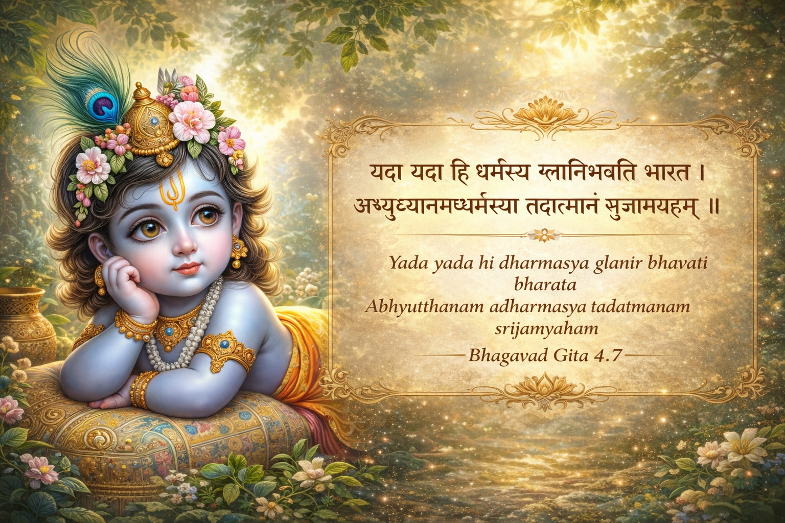
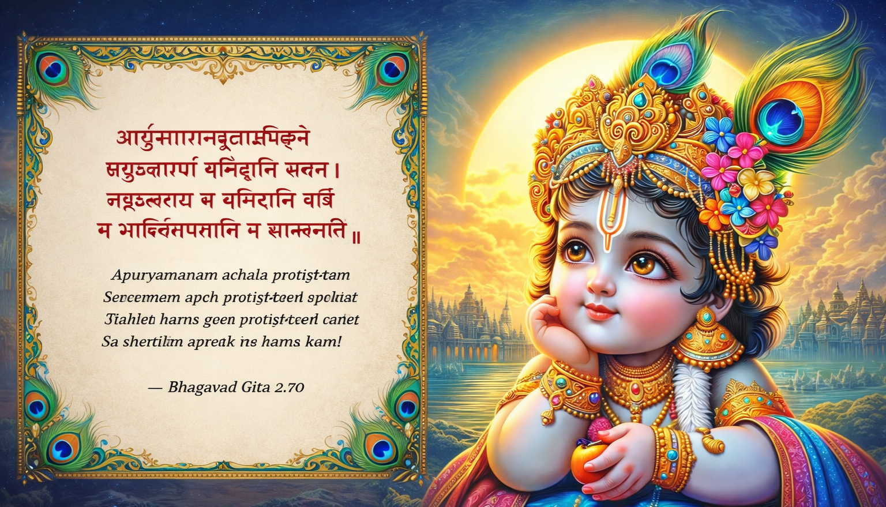
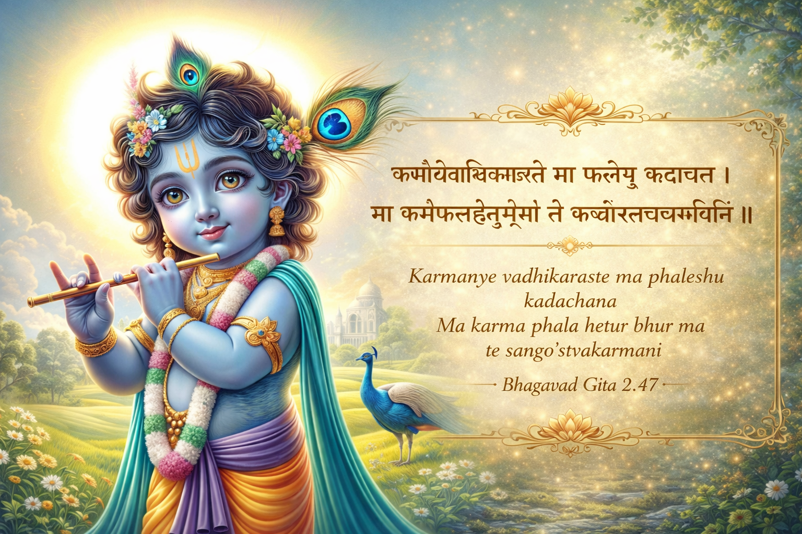
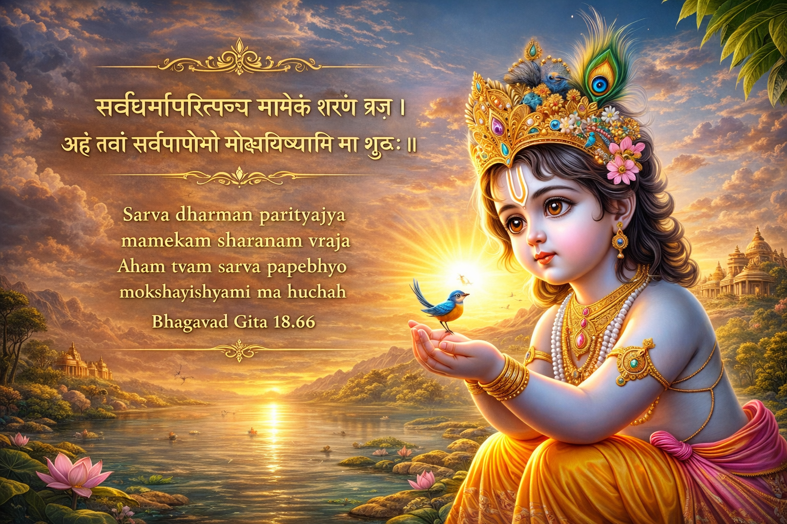
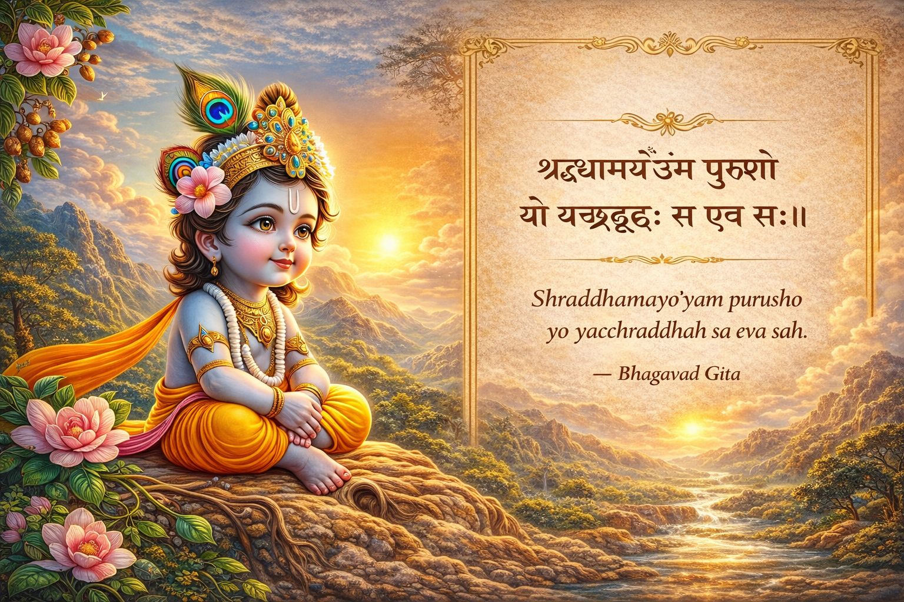
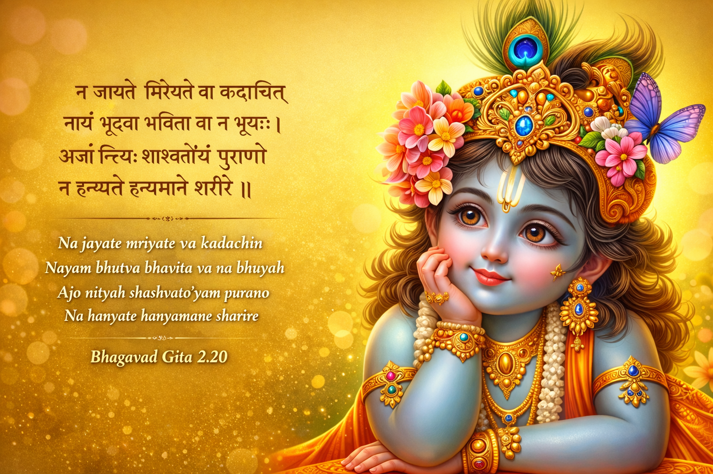

“Whenever righteousness (Dharma) declines and unrighteousness (Adharma) increases, O Arjuna, I manifest Myself on Earth.”
| Yada Yada | Whenever / At any time |
|---|---|
| Dharmasya Glani | Decline of righteousness, moral values, and justice |
| Adharmasya Abhyutthanam | Rise of evil, injustice, and immorality |
| Tada Atmanam Srijami Aham | At that time, I incarnate Myself |
Whenever the world loses its moral balance and evil becomes powerful, God appears in some form to restore righteousness and protect the good.

Just like many rivers flow into the ocean but the ocean remains full and calm, in the same way many desires may enter the mind of a wise person, yet that person remains peaceful and undisturbed. Such a person attains true peace. But a person who constantly runs after desires will never achieve peace.
| Apuryamanam Achala Pratishtham | The ocean that is always being filled but remains steady and unmoving |
|---|---|
| Samudram Apah Pravishanti Yadvat | Just as many rivers flow into the ocean |
| Tadvat Kama Yam Pravishanti Sarve | In the same way, many desires enter the mind of a person |
| Sa Shantim Apnoti | That person attains peace |
| Na Kama Kami | Not the person who keeps chasing desires |
A wise person stays calm and balanced even when many desires arise, just like the ocean remains steady when rivers flow into it. But a person who constantly chases desires can never feel satisfied or peaceful. True peace comes from controlling desires and maintaining inner stability.

You have the right to perform your duties, but you do not have the right to the results of your actions. Do not work only for the reward, and do not become attached to not doing your duty.
| Karmanye Eva Adhikaraste | You only have the right to perform your actions or duties |
|---|---|
| Ma Phaleshu Kadachana | You should never expect or depend on the results |
| Ma Karma Phala Hetur Bhur | Do not do actions only for the sake of rewards |
| Ma Te Sango’stvakarmani | Do not become attached to avoiding your duty or being inactive |
A wise person stays calm and balanced even when many desires arise, just like the ocean remains steady when rivers flow into it. But a person who constantly chases desires can never feel satisfied or peaceful. True peace comes from controlling desires and maintaining inner stability.

Give up all other duties and surrender completely to me. I will free you from all sins and suffering. Do not worry.
| Sarva Dharman Parityajya | Give up all other duties or paths |
|---|---|
| Mam Ekam Sharanam Vraja | Come to me alone for refuge / surrender to me |
| Aham Tvam Sarva Papebhyo | I will free you from all sins and wrong actions |
| Mokshayishyami | I will grant liberation |
| Ma Shuchah | Do not worry or feel sad |
The verse teaches complete surrender to God. When a person fully trusts and surrenders to the divine, God removes their sins and suffering and guides them toward liberation. Therefore, one should have faith and not worry.

A person is made of their faith. Whatever a person believes deeply, that is what they become.
| Shraddhamayah Ayam Purushah | A person is formed by their faith |
|---|---|
| Yo Yat Shraddhah | Whatever faith a person has |
| Sa Eva Sah | That is exactly what that person becomes |
Faith shapes a person’s thoughts, actions, and character. Whatever a person truly believes in strongly influences the kind of person they become in life.

The soul is never born and never dies. It always exists and cannot be destroyed. Even when the body is killed, the soul remains eternal and unchanged.
| Na Jayate Mriyate Va Kadachin | The soul is never born and never dies |
|---|---|
| Nayam Bhutva Bhavita Va Na Bhuyah | It does not come into existence and then cease to exist |
| Ajo Nityah Shashvato’yam Purano | The soul is unborn, eternal, everlasting, and ancient |
| Na Hanyate Hanyamane Sharire | The soul is not destroyed when the body is destroyed |
The verse teaches that the soul is eternal and cannot be destroyed. Death only affects the physical body, not the soul. Therefore, one should not fear death because the true self always exists.